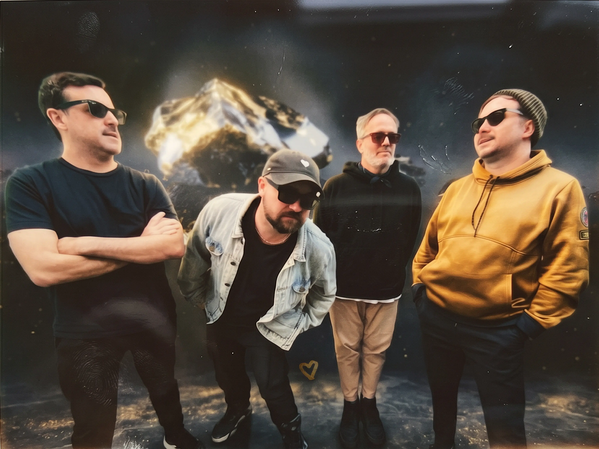
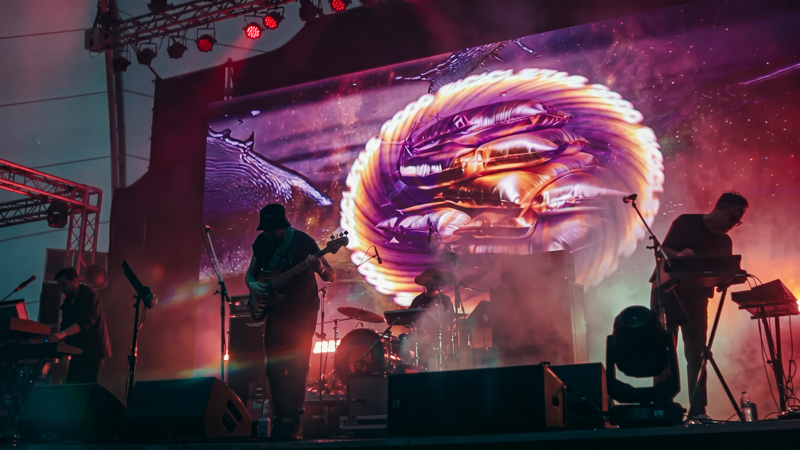
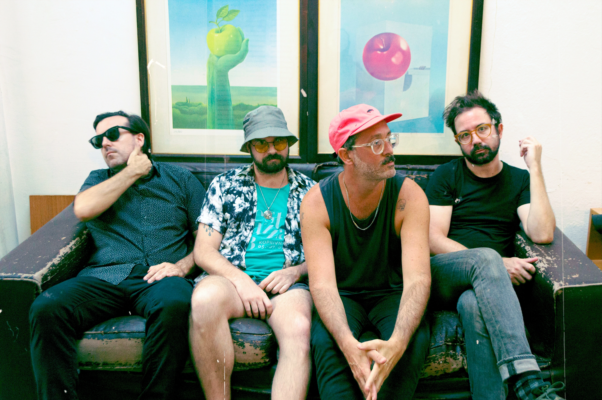

Buenos Aires · Argentina
MANTRAS ANTIDISTÓPICOS PARA EL TERCER OJO
En su nuevo álbum, Bicicletas3000 profundiza una búsqueda que viene desarrollando desde su transformación artística: convertir el existencialismo en una experiencia bailable.
Onírico se mueve entre psicodelia, indietrónica, dub esotérico y cultura rave, construyendo un universo de mantras optimistas, ritmos hipnóticos y paisajes sonoros donde lo orgánico y lo artificial, lo místico y lo digital conviven en una misma frecuencia.
Producido por Balam y DJ Richie Hell, el álbum explora el duelo, la transformación y la liberación emocional a través de canciones que funcionan como pequeños planetas sensoriales. Una invitación a encontrar calma, visión y movimiento en medio de la aceleración contemporánea.
Escuchá Onírico, el nuevo álbum de Bicicletas3000.
Bicicletas3000 es la evolución de Bicicletas, una de las bandas surgidas de la primera generación del indie argentino de los años 2000. Desde su formación en 2001, el grupo desarrolló una trayectoria singular que lo llevó desde el rock alternativo hacia territorios cada vez más experimentales.
A fines de 2019 la banda inicia una transformación artística que da origen a Bicicletas3000, incorporando nuevas influencias ligadas a la electrónica, la psicodelia, el dub y la cultura rave. Este proceso se refleja en proyectos como el cortometraje Los Transparentes (2020), el mixtape Está Saliendo el Sol (2024) y su más reciente álbum, Onírico (2025).
Con más de dos décadas de recorrido, Bicicletas3000 construyó una identidad propia donde conviven exploración sonora, sensibilidad pop y una búsqueda estética que conecta lo emocional, lo espiritual y lo tecnológico. Su propuesta actual combina paisajes electrónicos, pulsos bailables y atmósferas psicodélicas, transformando preguntas existenciales en experiencias colectivas de movimiento y celebración.
A lo largo de su carrera han participado en algunos de los festivales más importantes de Argentina, incluyendo Creamfields, Personal Fest, Pepsi Music, Festival BUE y Quilmes Rock, además de compartir escenarios con artistas internacionales como Roger Waters, Arctic Monkeys y Jane's Addiction.
Años de trayectoria
Creamfields, Personal Fest, Festival BUE, Quilmes Rock
Roger Waters, Arctic Monkeys, Jane's Addiction, Depeche Mode, Blur


